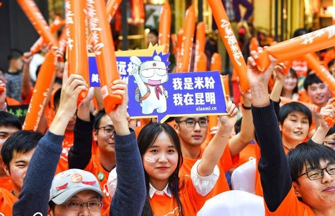
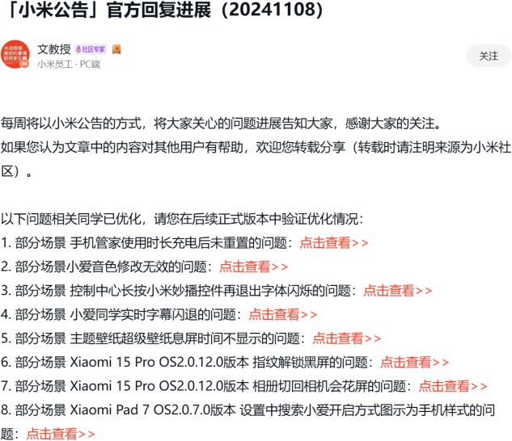
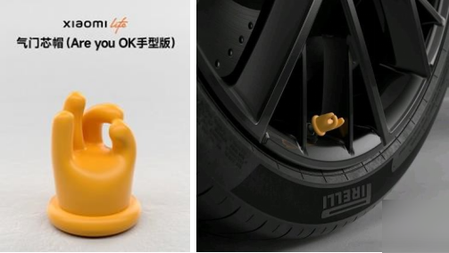
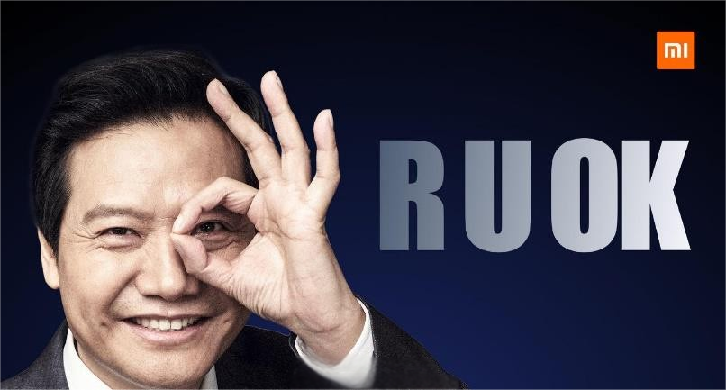
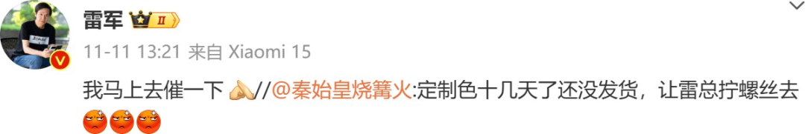
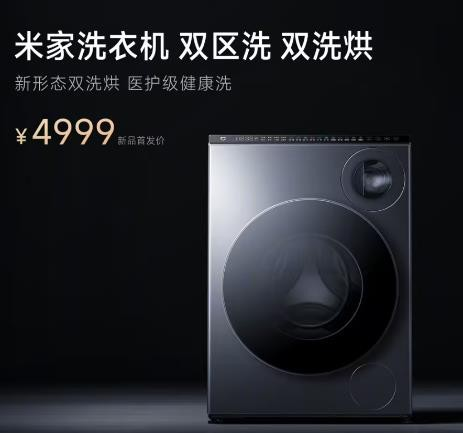
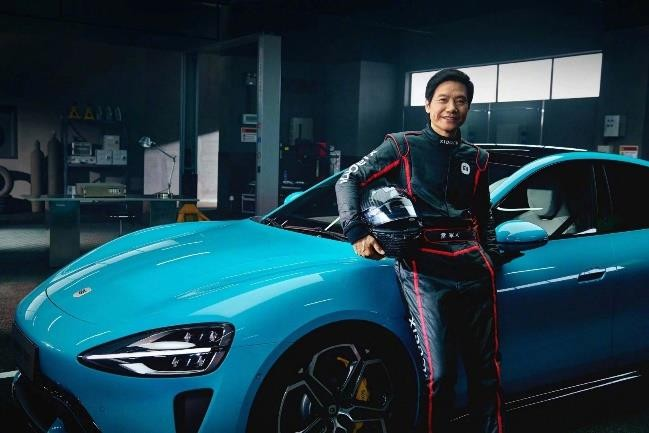
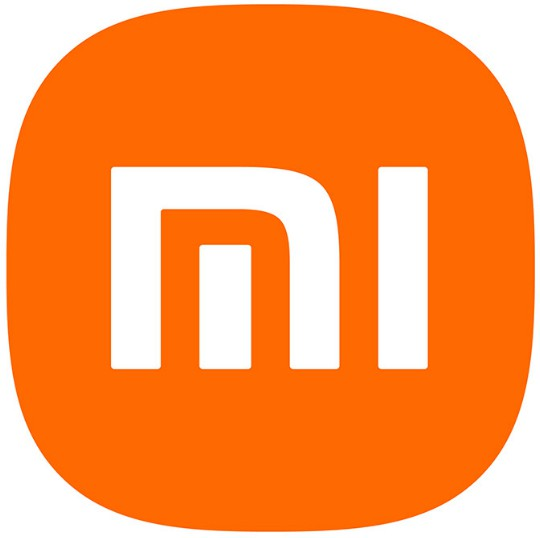

在这个浮躁的时代，小米与雷军用他们的行动证明，唯有真正放下身段，与用户交朋友，才能赢得用户的真心与信赖。
2010年春天，在北京的一隅，小米悄然诞生，最初仅由13位追梦者和一款产品起步。到2023年底，这家企业已发展为拥有33627名全职员工的世界500强，产品覆盖手机、平板、手表、洗衣机等多元品类。在全球科技产业巨头林立的竞争格局中，小米如何从初创公司破茧而出，铸就品牌传奇？本文将揭秘其品牌影响力的三大法宝：社群经济、年轻化品牌定位，以及创始人雷军的强大个人IP。
unsetunset一. 小米的社群经济：共创共赢的乐园unsetunset
小米的社群，是产品创新的温床，是“米粉”的欢乐聚集地，更是品牌与消费者紧密相连的纽带。面对诺基亚、三星等巨头的围剿，小米另辟蹊径，以社群为突破口。自MIUI系统开放初期，小米就从各大论坛精选100名极客用户，邀请他们深度参与系统迭代。

图1 MIUI综合讨论社群
这些初代米粉，有热血的大学生，有技术狂热的极客，也有平凡的数码爱好者。小米社群精准捕捉到了他们对产品的热爱与渴望，通过运营社群，与米粉紧密互动，将他们的声音转化为产品的改进，满足了米粉对产品的无限遐想。同时，这份共同的热爱也让米粉们紧密相连，为小米的未来发展奠定了坚实的粉丝基础。
小米社群不仅促进了米粉之间的交流与分享，更让米粉与品牌之间建立了深厚的情感纽带。自2012年启动的 "小米爆米花" 活动，足迹遍布全球，雷军等高管团队始终保持与用户的零距离互动。从米粉家宴到橙色跑，创新运营模式持续深化用户参与感，传递品牌对用户的感恩之心。

图2 米粉们
米粉们在社区分享使用体验，提出改进建议。而小米也要求产品经理、工程师深入社群，与米粉面对面交流，确保产品能够精准满足用户需求。如今，小米社区活跃用户已超48.3万，MIUI 综合讨论的圈成员数量超过了654.6万，入驻员工达到了1500人。
除了MIUI系统外，小米的新产品还会通过“酷玩帮”、“应用”等板块进行测评，通过众多用户的公测、使用、评测、反馈等环节，帮助小米工程师找到更多的提升空间，不断地优化产品功能和用户体验。

图3 小米社区
这种社群经济的模式，不仅塑造了小米重视用户体验的品牌形象，更让米粉在社群中找到了归属感，进一步巩固了小米的品牌忠诚度。
unsetunset二. 年轻化的品牌定位：与年轻人同频共振unsetunset
小米对自己的品牌定位是年轻化，他们的用户大部分是青年群体。正所谓知己知彼，百战不殆。要想在年轻群体中打造自己的品牌影响力，首先就要了解年轻人喜欢什么，对什么可以产生共鸣。
对年轻群体来说，他们热爱个性化的网络用语，但是仅仅在表达上套上互联网的语言模板是远远不足的，还需要更多。比如说，化解权威。
如今，不管是九零后还是零零后，他们的思想都更加自由叛逆，有一句网络用语的爆火可以从侧面反映这一点——“世界就是一个巨大的草台班子”。 有人将雷军在印度小米产品发布会上说的一句英语“Are you OK?”做成了一首“鬼畜”歌曲，原意是想利用雷总的英语口音来搞笑。
不同于其他互联网公司对大佬高冷神秘形象的维护，小米集团在董事会一致同意之后花了两百万买了这首歌的版权，并将其作为了小米手机的一款铃声，取名为“跟着雷总摇起来”。在小米汽车SU7发行后，小米集团还推出了一款名为 “Are you OK”的气门芯帽产品。这款气门芯帽以手型设计为特色，售价29.9元，成功吸引了消费者的注意。

图4 "Are you OK"气门芯帽产品
我们经常感叹，当今的互联网时代是“娱乐至死”的时代，但是敢于打破常规，娱己乐民的人却能出奇地获得这些年轻网友的接纳甚至尊敬。
截止2024年11月12日，《Are you ok》的MV在网易云平台上已经被播放了634.7万次。

图5 "R U OK"
unsetunset三. 雷军的个人IP：接地气的理想主义者unsetunset
雷军，作为小米的灵魂人物，他的个人IP是小米品牌影响力的重要支柱。从金山词霸到天使投资人，再到小米集团的创始人兼CEO，雷军的人生经历充满了传奇色彩。
他以接地气、理想主义、厚道的形象，赢得了年轻互联网用户的广泛赞誉。因此，雷军本人具有非常强的IP属性，即“自带流量”，所以雷军也积极利用自己的影响力为小米“引流”，这也为他赢得了“小米销冠”的称号。雷军的个人 IP 主要有三个特点：接地气、理想主义、厚道。
首先是接地气。除了前面提到的购买鬼畜歌曲的版权并设置为铃声，雷军也在方方面面展现了自己的接地气。雷军经常活跃于社交媒体，尤其是微博，除了更新自己的产品研发动态，也会亲自回应用户的疑问。

图6 雷军对米粉的回复
在大众场合，雷军方言味的普通话、阳光亲和的笑容以及和粉丝平等的互动都让他的形象显得十分接地气。此外，雷军也会关注米粉们的某些产品Idea，对于其认为存在市场需求的产品要求研发部进行设计和跟进。小米的分区洗衣机就是这样造出来的。

图7 米家洗衣机
第二是理想主义。雷军经常在自己的年度演讲中分享自己的创业经历和人生感悟，充满了理想主义和梦想情怀，打动了很多的年轻人，也为小米品牌注入了顽强奋发的精神内核。
在小米集团已经走入稳态的第十一年，也就是2021年，雷军又一次高调宣布自己要进军汽车行业，并且坦言是赌上此生所有战绩和荣誉的最后一次创业。在旁人看来，这几乎是一个毫不相关的多元化战略，比亚迪总裁王传福也为其捏了一把汗，但是雷军并不为此所动，仅仅用了三年，他用自己的小米SU7打脸了所有的质疑者。最新的数据显示，小米SU7仅用230天便达成十万台下线，而而达成这一成绩特斯拉耗时7年，理想汽车用了708 天。由雷军亲自掌舵的小米汽车取得突破性成功，其最后一次创业征程充分彰显了一位务实理想主义者的坚守。

图8 雷军和他的SU7
第三就是厚道。作一个厚道的企业家不容易，尤其是作为一个非常成功的、财富自由的企业家，能够积极承担社会责任、与人为善，更能赢得社会和消费者的广泛肯定。雷军在抗疫期间累积捐赠的资金及物资达到八千多万元，荣获“中华慈善奖”。当然，最出名的还是作为武汉大学的优秀校友，为母校捐了上亿元。为了贯彻“让每个人都能享受到科技的乐趣”的理念，雷军承诺小硬件产品综合利润率永远不超过5%，如果超了，就以合理的形式返还给消费者。
雷军多年来营造的接地气、有理想主义、厚道的形象深入人心，这种形象与小米做“感动人心，价格厚道“的产品理念不谋而合，个人IP和品牌形象产生共振，进一步放大了小米的品牌影响力。
unsetunset四. 总结：小米的传奇之路unsetunset
小米作为手机行业的后起之秀，其成功不仅源于高质量产品，更得益于品牌与雷军多年构建的影响力。

图9 MI
尽管众多企业研究小米模式，但真正复制者寥寥。究其原因，小米的三板斧（社群经济、品牌定位、雷军的个人IP）并非孤立存在，而是构成了一个完整的影响力生态，背后是一套核心统一的价值观——打造“感动人心、价格厚道”的产品，让“所有人都能享受科技带来的美好”。这个理念需要高质量的产品力作为基础，同时也需要小米品牌和雷军多年的运营和沉淀。
在这个浮躁的时代，小米与雷军用他们的行动证明，唯有真正放下身段，与用户交朋友，才能赢得用户的真心与信赖。
参考文献
[^1]https://www.sohu.com/a/286665129_100070953[2]https://www.mi.com/index.html [3]https://www.weibo.com/u/1749127163 [4]https://www.ithome.com/0/806/246.htm [5]https://www.bing.com/videos/riverview/relatedvideo?q=%e9%9b%b7%e5%86%9 b%e5%b9%b4%e5%ba%a6%e6%bc%94%e8%ae%b2&mid=B2CB985713852A6AA 877B2CB985713852A6AA877&mcid=28030BF9CA55479186D5D436D7FF12BA& FORM=VIRE [6]https://web.vip.miui.com/page/info/mipop/historyReview[7]https://www.mi.com/about